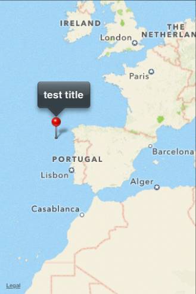

The MoSync Widget C API's Map widget makes it possible for you to add a map to your application and perform different operations on it. This widget is only available for Windows Phone 7 and iOS.
This tutorial presents all the functionality of the map widget and provides a full application example.
The Api key used to access the full features of the google map. Currently not used (the map is not available on Android). This property can be set by using the default widget setProperty method or by providing the key to the map constructor. The following examples will show both methods. The following examples will show both methods. For further details on how to obtain this key go to "https://developers.google.com/maps/documentation/android/mapkey".
Example:
map>setProperty(MAW_MAP_API_KEY_GOOGLE, “google api key”);
Map* map = new Map("google credentials", "bing credentials");
The api key used to access the full features of the bing map (on windows phone platform). This property can be set by using the default widget ‘setProperty’ method or by providing the key to the map constructor. The following examples will show both methods. For further details on how to obtain this key go to "http://msdn.microsoft.com/en-us/library/ff428642.aspx".
Example:
map>setProperty(MAW_MAP_API_KEY_BING, “google api key”);
Map* map = new Map("google credentials", "bing credentials");
The map type changes the way the widget looks and we’re providing two different map types:
Example:
Map* map = new Map("mock credentials", "mock credentials");
map >setMapType(MAP_TYPE_ROAD);
Screenshots:
| Roads map on Windows Phone 7 | Roads map on iOS |
Example:
Map* map = new Map("google credentials", "bing credentials");
map >setMapType(MAP_TYPE_SATELLITE);
Screenshots:
| Satellite map on Windows Phone 7 | Satellite map on iOS |
A number indicating how far/close the map currently is and its value can be between 0 and 21.
Example:
map>setZoomLevel(0);
or
this->setPropertyInt(MAW_MAP_ZOOM_LEVEL, 2);
Disables/enables the interaction between the user and the map.
Example:
map->setInteractionEnabled(true)
or
map->setProperty(MAW_MAP_INTERRACTION_ENABLED, "true");
The map center is a unique map point that has, besides the latitude and longitude coordinates, a zoom level. The center can be set and then the map can be centered.
Example:
map>centerMap();
or
map>setProperty(MAW_MAP_CENTERED, "true");
The center properties:
Example:
// sets the center of the map (both latitude, longitude and zoom // level) map->setCenter(MapLocation(32.43, 43.34, 11));
or
map>setProperty(MAW_MAP_CENTER_LATITUDE, “32.43”);
Example:
// sets the center of the map (both latitude, longitude and zoom // level) map->setCenter(MapLocation(32.43, 43.34, 11));
or
map>setProperty(MAW_MAP_CENTER_LONGITUDE, “43.34”);
Example:
// sets the center of the map (both latitude, longitude and zoom // level) map->setCenter(MapLocation(32.43, 43.34, 11));
or
map->setProperty(MAW_MAP_CENTER_ZOOM_LEVEL, “3”);
The map visible area contains details about the current area displayed on the map. It is described by its upper left corner and lower right corner. The map can be programmatically moved to a new visible area.
Example:
map->setVisibleArea(32.1234, 22.123124, 11.231123, 12.32344);
or
Location upperLeftCorner(32.1234, 22.123124); Location lowerRightCorner(11.231123, 12.32344); MapRegion region(upperLeftCorner, lowerRightCorner); map->setVisibleArea(region);
The visible area properties:
Example:
map->setProperty(MAW_MAP_VISIBLE_AREA_UPPER_LEFT_CORNER_LATITUDE,”32.32423”);
The longitude coordinate of the upper left corner.
Example:
map->setProperty(MAW_MAP_VISIBLE_AREA_UPPER_LEFT_CORNER_LONGITUDE,”44.3242”);
The latitude coordinate of the lower right corner.
Example:
map->setProperty(MAW_MAP_VISIBLE_AREA_LOWER_RIGHT_CORNER_LATITUDE,”12.3214”);
The longitude coordinate of the lower right corner.
Example:
map->setProperty(MAW_MAP_VISIBLE_AREA_LOWER_RIGHT_CORNER_LONGITUDE,”29.32345”);
When set to true, the map gets centered on a previously set visible area.
Example:
map->setProperty(MAW_MAP_CENTERED_ON_VISIBLE_AREA,”true”);
The map accepts the adding of map pins (or annotations, on iOS). A pin is described by its coordinates (latitude and longitude) and a text.
The latitude of the map pin.
The longitude of the map pin
A text that will appear when the user clicks on a map pin.
Example:
MapPin *mapPin = new MapPin(Location(32.2312, -11.2321));
mapPin->setText("test title");
map->addMapPin(mapPin);
Screenshots:
|  | |
| Map pin on Windows Phone 7 | Map pin on iOS |
Sent when the zoom level of a map widget has changed (if the user zoomed in or out).
Sent when the visible region on the map has changed (if the user scrolled/draged the map).
Sent when a map pin is clicked by the user.
#include <ma.h>
#include <mavsprintf.h>
#include <MAUtil/Moblet.h>
// Include all the wrappers.
#include <NativeUI/Widgets.h>
using namespace MAUtil;
using namespace NativeUI;
/**
* Moblet to be used as a template for a Native UI application.
*/
class NativeUIMoblet : public Moblet, MapListener
{
public:
/**
* The constructor creates the user interface.
*/
NativeUIMoblet()
{
createUI();
}
/**
* Destructor.
*/
virtual ~NativeUIMoblet()
{
// All the children will be deleted.
delete mScreen;
}
/**
* Create the user interface.
*/
void createUI()
{
// Create a NativeUI screen that will hold layout and widgets.
mScreen = new Screen();
//Create a Vertical Layout that will hold widgets
mLayout = new VerticalLayout();
//Let the layout fill the entire screen
mLayout->fillSpaceHorizontally();
mLayout->fillSpaceVertically();
mScreen->setMainWidget(mLayout);
createMapUI();
mScreen->show();
addMapPin();
}
private:
/**
* Creates the map UI.
*/
void createMapUI()
{
// create the main map and add it to the main layout
mMap = new NativeUI::Map("google mock credentials", "bing mock credentials");
mMap->fillSpaceHorizontally();
mMap->fillSpaceVertically();
// set the map type to satellite (by default it's set to MAP_TYPE_ROAD)
mMap->setMapType(MAP_TYPE_ROAD);
// set the map initial zoom level
mMap->setZoomLevel(3);
mLayout->addChild(mMap);
}
/**
* Adds a map pin on the map.
*/
void addMapPin()
{
MapPin *mapPin = new MapPin(Location(42.2312, -11.2321));
mapPin->setText("test title");
mMap->addMapPin(mapPin);
}
/**
* This method is called when the zoom level of the map changes (at a double tap
* on the google maps for example).
* @param map The map object that generated the event.
*/
void mapZoomLevelChanged(Map* map)
{
}
/**
* This method is called when the visible region on the map is changed (on a drag/scroll
* for example).
* @param map The map object that generated the event.
*/
void mapRegionChanged(Map* map)
{
}
/**
* This method is called when the user clicks on a map pin.
* @param mapPin The map pin object that generated the event.
*/
void mapPinClicked(MapPin* mapPin)
{
}
private:
Screen* mScreen; //A Native UI screen
VerticalLayout* mLayout; //A Native UI layout
NativeUI::Map* mMap; //The native UI map
};
/**
* Main function that is called when the program starts.
*/
extern "C" int MAMain()
{
Moblet::run(new NativeUIMoblet());
return 0;
}
Screenshots from example app:
| |
| Example app on WIndows Phone 7 | Example app on iOS |